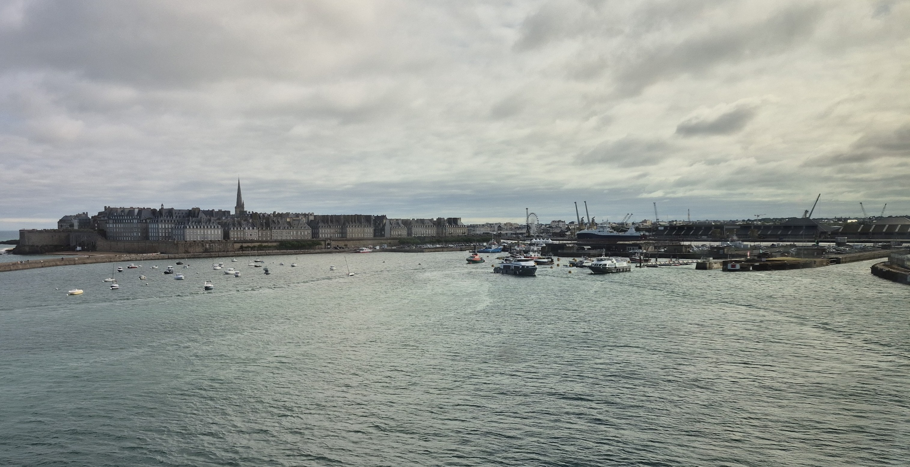
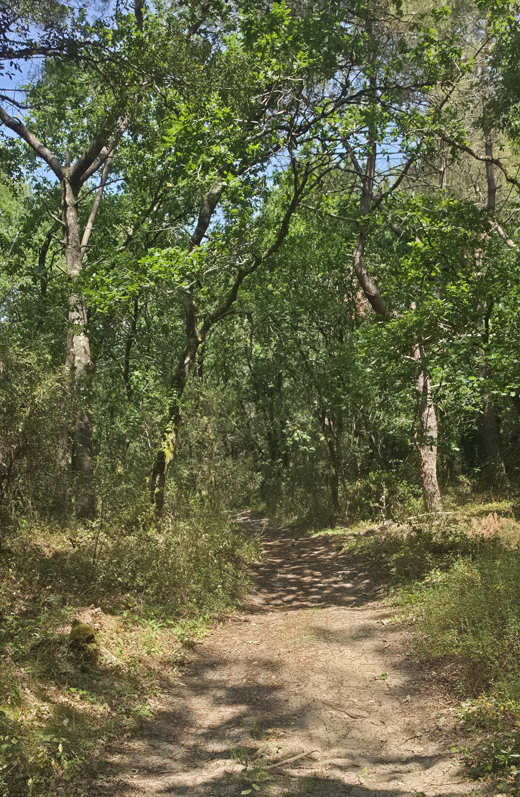
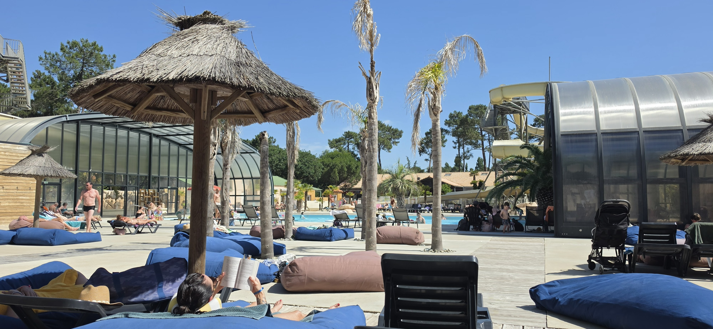
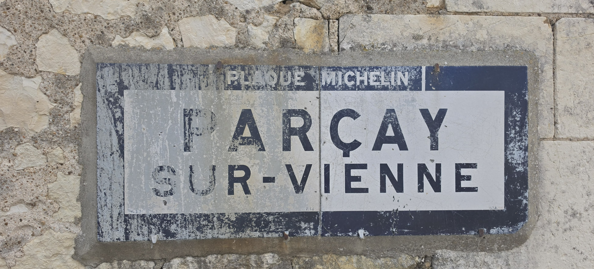
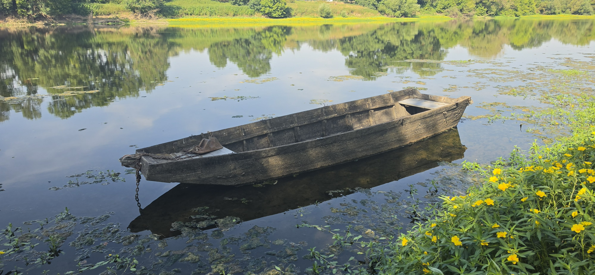
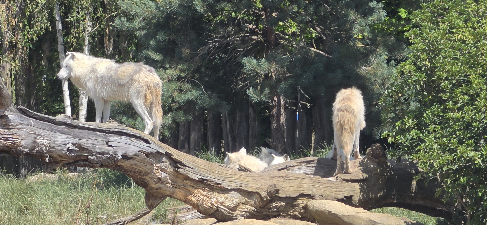

Every year there comes a point when the routine of everyday life begins to feel just a little too familiar. The twelve-hour shifts blur into one another, days off disappear almost as soon as they begin, and before long I find myself studying campsites and ferry timetables.
The campsite selection is easy: the same one as last year (as long as the price hasn’t risen too much), La Pinède near Les Mathes.
Except, if I’m honest, my holiday doesn’t really begin on the ferry.
It begins about 276 days earlier.
That’s when I first set the countdown on my phone. Every morning, almost without thinking, I glance at it.
200 days to go, 150 — 100, 99, 98…
And every day I let everyone else know what it says. Long before I’ve packed the bike, the holiday has already started in my mind.
People laugh when they see the countdown, and then eventually get fed up with me mentioning it daily, but anyone who knows me understands why it’s there. They also know that once I find somewhere I like, I’ll happily keep going back. Why spend weeks searching for somewhere different when you’ve already found somewhere that feels like home?
There’s another reason my holidays always begin in June.
I’m tight.
Not careful. Not economical. Properly tight.
Anyone who knows me will tell you that.
June gives me almost everything I want from France at a fraction of the price of the school holidays. The weather is usually glorious, the roads are quieter, the campsites are less crowded and, perhaps most importantly, my wallet remains considerably happier.
It suits me perfectly.
In fact, I enjoy it so much that I return again every September for another twelve nights. Same campsite. Same forest. Same routines. Some people might call that repetitive.
I call it knowing a good thing when I find it.
People often ask where I go on holiday. When I answer “France”, they usually imagine crowded beaches, busy campsites and long afternoons baking in the sun.
The reality couldn’t be more different.
Anyway, the countdown on my phone gets to two, and it’s time to start thinking about loading up the Suzuki, pointing it towards Portsmouth and spending a few weeks in France.

Nine Days at Les Mathes
As I’ve said, the first part of this year’s holiday was spent at Les Mathes on France’s Atlantic coast. Not really my idea to split the holiday, but that’s how it ended up.
Every morning followed almost exactly the same routine.
Two cups of coffee.
Not because I particularly wanted two, but because the French seem convinced coffee should be served in cups roughly the size of egg cups. Two cups almost made one small UK coffee.
Breakfast consists of porridge for the first couple of mornings, if I remember to bring a couple of sachets to eat while I settle in, that is. Then comes the annual pilgrimage to the supermarket in search of two essentials.
Proper milk.
None of your UHT milk for me.
And a box of hazelnut Trésor cereal.
Once those had been acquired, the holiday could officially begin.
Every year I carefully pack enough clothes for almost any eventuality.
Every year I wear exactly the same pair of shorts and the same T-shirt for most of the holiday. When they need a wash I just take them in the shower with me. Nobody has complained about me smelling too bad yet.
And every year I return home with two-thirds of my clothes completely untouched.
Apparently, I’m optimistic when packing and remarkably predictable once I arrive.
The one thing I do make sure I bring home, however, is a decent tan. A few weeks of walking under the French sun generally succeeds where the Welsh weather fails rather spectacularly.
Walking boots get used for the bike and, other than that, they never leave the caravan. They’d only spoil the tan lines.
A comfortable pair of trainers does the job perfectly.
This year, however, my faithful old trainers finally admitted defeat after four or five days. They’d already served well beyond their expected lifespan and chose a forest somewhere in western France to disintegrate completely.
A quick visit to Decathlon solved the problem, although I suspect the new pair will now be expected to survive the next decade.

With coffee finished and trainers laced up, I’d disappear into the Forêt de la Coubre.
The forest became my playground for the next nine days. Sandy tracks disappeared beneath towering pine trees before eventually emerging onto dunes where I could hear the Atlantic crashing long before I could actually see it.
No two walks ever felt the same, and nor did they need to.
Sometimes I’d wander for hours without seeing another person. Other days I’d find myself standing on the beach watching surfers battling the waves before disappearing back into the cool shade of the forest.
The scent of warm pine resin filled the air while cicadas provided a constant soundtrack above my head. The evening sun transformed ordinary woodland paths into golden tunnels that seemed to stretch forever.
The forest had its own curious inhabitants too.
One insect in particular fascinated me.
The best way I can describe it is as a cross between a black horsefly and a grasshopper.
Every time I approached, it would leap into the air and stay just ahead of me, almost as though it was leading me down the path.
After fifty yards or so it would suddenly lose interest, turn around and disappear back the way we’d come.
Perhaps I’d wandered into its territory.
Or perhaps it simply enjoyed confusing tourists.
The bushes on either side of the tracks constantly rustled with unseen movement. I’d usually pause for a moment, secretly hoping a graceful deer might step out into the open.
My more sensible side suspected it was probably wild boar.
Whatever it was invariably decided it wanted nothing to do with me and disappeared long before I managed to catch so much as a glimpse.
Evenings at the Campsite
By late afternoon I’d usually return to the campsite hot, dusty and thoroughly satisfied with another day’s exploring.
The swimming pool quickly became my favourite place to cool down.
More than once I only realised, as I stepped into the water, that my ankles and calves were absolutely coated in forest dust after miles of walking sandy tracks. No doubt the people already in the pool appreciated my contribution to the local ecosystem.
Afterwards came what was probably the biggest daily expense of the holiday.
A grande bière.
Over the course of three weeks, I suspect I contributed a reasonable amount towards the campsite bar’s annual profits.
Before the evening entertainment began, the animation team would hold a French quiz.
Armed with Google Translate and a determination that far exceeded my knowledge of the French language, I’d frantically point my phone at the questions while hoping no French family shouted out the answer before the translation finished.
One memorable evening I somehow managed to score six points.
I’m still not entirely convinced they weren’t awarded simply for effort.

Heading Inland
Seven Nights in the Loire Valley
After nine wonderful days on the coast, it was time to head inland to the Loire Valley.
Almost immediately everything changed.
The sound of waves was replaced by quiet rivers.
The pine forests gave way to fields of sunflowers and lavender.
The roads became even quieter.
The pace of life somehow slowed even further.
This became a holiday of villages, rivers and endless walking.
The Joy of Curiosity
One thing I’ve realised is that I don’t really travel to see famous places.
I travel because I’m curious.
Every day seemed to raise another question.
What crop is growing in this field?
Why are these old Michelin village signs still here?
What does that stone marker mean?
Where did this old railway line once lead?
Most people probably walked straight past these things without a second glance.
I couldn’t.
Finding the answers became just as enjoyable as discovering the questions.


Wildlife Everywhere
What struck me more than anything else was just how alive the French countryside felt.
Butterflies drifted lazily across the paths.
Dragonflies hovered over rivers like tiny helicopters.
Grasshoppers launched themselves into the air with every step.
Lizards disappeared into dry stone walls almost before I could focus the camera.
The hedgerows constantly rustled with unseen life.
Morning and evening belonged to the frogs.
Every sunrise and sunset came with its own soundtrack.
Then there were the flies.
Tiny flies. Huge flies. Every imaginable variety of annoying fly.
The French seem to have perfected them all.
The greatest surprise came one afternoon beside the Vienne.
Four wild beavers.
For several minutes I simply stood watching them glide silently through the water before disappearing into the reeds.
No photograph could ever quite capture how special that moment felt.
A Day to Remember
One of the highlights of the holiday came when I met my son Liam and his girlfriend Leah at ZooParc de Beauval.
We spent almost eight hours there.
The place is astonishing.
Every enclosure somehow managed to surpass the last. Brown bears cooling themselves in the water, curious meerkats standing sentry, giant otters gliding effortlessly beneath the viewing windows and countless other animals I’d previously only admired in documentaries.
Like the rest of my holiday, there was no rush.
We simply wandered, stopped whenever something caught our attention and enjoyed spending the day together.
By the time we left, we’d walked miles without even realising it.
It remains one of the finest zoos I’ve ever visited.
Disappointingly, there was no butterfly enclosure though.

The Simple Things
Looking back, it wasn’t the famous attractions that made the holiday memorable.
It was the forgotten ones.
An abandoned wooden boat resting beside the river.
A faded Michelin sign that had stood for decades.
A quiet lavender field beside an old farmhouse.
A weathered château gate.
A footbridge carrying walkers where trains once ran.
A dragonfly settling long enough for a photograph.
Moments that most people would probably never notice.
Homeward Bound
Eventually, as holidays always do, mine came to an end.
Packing the bike took less than half an hour.
Mentally, I wasn’t ready to leave at all.
As I rode north towards Caen, I realised I hadn’t spent three weeks chasing famous landmarks or following a carefully planned itinerary.
I’d simply wandered.
I’d walked countless miles through forests and beside rivers.
I’d met wonderful wildlife.
I’d watched beavers, listened to frogs, photographed forgotten places and discovered beauty in the smallest details.
Tomorrow I’d be back at work.
Back to alarm clocks.
Back to twelve-hour shifts.
As I unpacked the bike back home, I glanced at my phone.
The countdown was showing 17 days. Sadly, that’s 17 days since my holiday started.
It wouldn’t stay that way for long.
A few days later another countdown appeared.
48 days to go.
Twelve nights in Les Mathes?
Just checking for availability.
And price. 😉
September can’t come soon enough.
I settled on a different campsite for September, this one's south of the river, Mayotte Vacances just outside Biscarrosse. I'll be meeting Liam there, he is travelling a few days earlier than me and using a different route, because apparently he likes ferries. He's going from home to Ireland and then on the ferry to Bilbao and travelling back up to Biscarrosse. Followed by a further three nights up towards our old haunt of Les Sables d'Olonne, and then home via St-Malo.